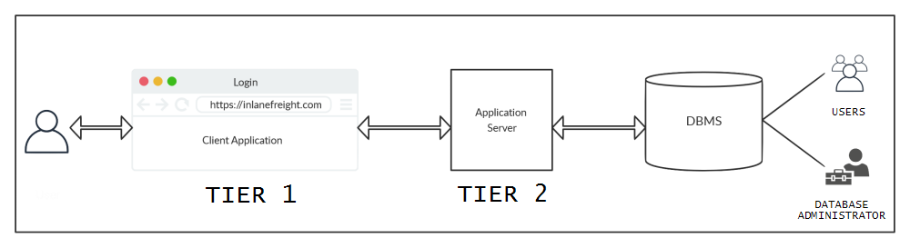

Architecture
•
Tier 1 → consists of client-side applications such as websites or GUI programs. These applications consist of high-level interactions such as user login or commenting.
•
Tier 2 → data from Tier 1 interactions is passed to Tier 2 through API calls or other requests.
Tier 2 the middleware, which interprets these events and puts them in a form required by the DBMS. Finally, the application layer uses specific libraries and drivers based on the type of DBMS to interact with them
•
DBMS → The DBMS receives queries from Tier 2 and performs the requested operations. These operations could include insertion, retrieval, deletion, or updating of data. After processing, the DBMS returns any requested data or error codes in the event of invalid queries.